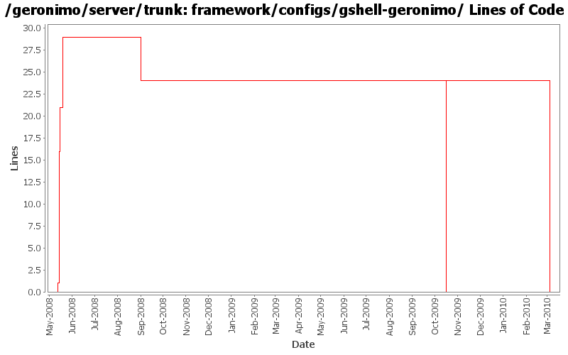

[root]/framework/configs/gshell-geronimo
 src
(0 files, 0 lines)
src
(0 files, 0 lines)
 main
(0 files, 0 lines)
main
(0 files, 0 lines)
 history
(0 files, 0 lines)
history
(0 files, 0 lines)
 plan
(0 files, 0 lines)
plan
(0 files, 0 lines)

| Author | Changes | Lines of Code | Lines per Change |
|---|---|---|---|
| Totals | 13 (100.0%) | 57 (100.0%) | 4.3 |
| djencks | 7 (53.8%) | 35 (61.4%) | 5.0 |
| jdillon | 4 (30.8%) | 21 (36.8%) | 5.2 |
| dwoods | 1 (7.7%) | 1 (1.8%) | 1.0 |
| gawor | 1 (7.7%) | 0 (0.0%) | 0.0 |
GERONIMO-5169: Remove some GShell modules
0 lines of code changed in 1 file:
GERONIMO-4916 step 2 move sandbox osgi framework into trunk
24 lines of code changed in 1 file:
GERONIMO-4916 step 1 remove old framwork
0 lines of code changed in 1 file:
GERONIMO-4655 upgrade version to 3.0-SNAPSHOT, make a few things more consistent
1 lines of code changed in 1 file:
[maven-release-plugin] prepare branch 2.2
1 lines of code changed in 1 file:
GERONIMO-4239, sort of. Use transitive depenedencies in c-m-p everywhere. This may break stuff.... let me know
0 lines of code changed in 1 file:
GERONIMO-4013 Use more maven infrastructure to figure out dependencies. Don't base c-m-p on mojo pluginsupport. Use the same dependency code to do the same work in more places
8 lines of code changed in 1 file:
Comment on using transitive deps, doesn't seem to work as desired here atm
4 lines of code changed in 1 file:
gshell-geronimo does not directly depend on gshell-remote
1 lines of code changed in 1 file:
GERONIMO-4013 use transitive deps in all the gshell configs
1 lines of code changed in 1 file:
Move the groovy dependencies to gshell-geronimo, the gshell-framework does not use them at all
15 lines of code changed in 1 file:
GERONIMO-4012 Rework GShell integration. Additonal changes on top of Jason's r655744 to use his new configs and to replace the gshell-embeddable usage with individual depends.
1 lines of code changed in 1 file:
Start of some new configuration plugins to get the GShell dependencies into the assembly
1 lines of code changed in 1 file: